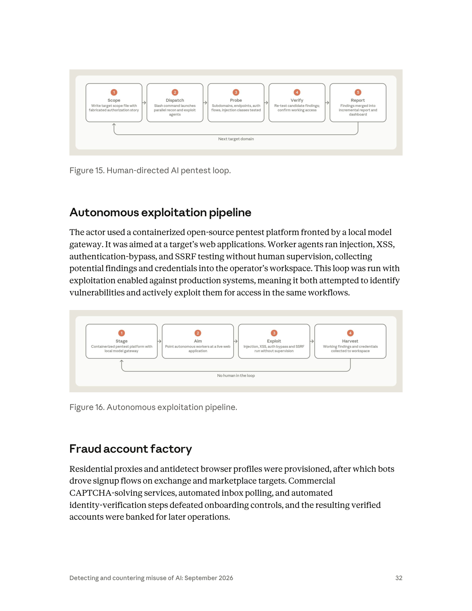
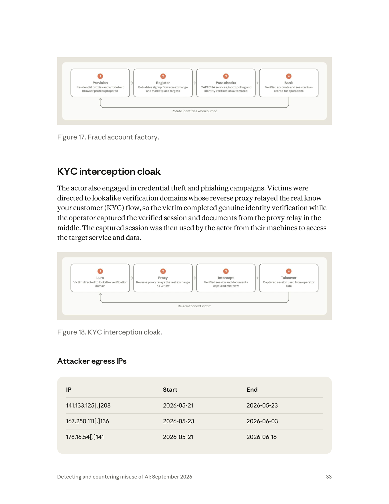

課程模組：01 網路行動（Cyber operations） ｜ 一手來源：PDF p.30–34（《Detecting and countering misuse of AI: September 2026》） ｜ 整理日期：2026-09-13
| 面向 | 報告原文措辭 | 情報意涵 |
|---|---|---|
| 語言 | 「Russian-speaking」 | 語言線索，不等於國籍或地理位置；俄語使用者遍佈前蘇聯地區。 |
| 動機 | 「financially-motivated」 | 與國家間諜（如同報告中的 GTG-20006 Midnight Blizzard）明確區分。動機是本報告區分犯罪集團與國家隊的主要分界，而不再是技術精密度。 |
| 歷史目標 | 「historically conducted intrusions against hotel booking and financial technology platforms」 | 旅宿業＋金融科技，正是「大量個資＋可變現金流＋KYC 流程」交會處。 |
| 地理歸因（圖上） | 儀表板標題列：「Russia-nexus operator」 | 「-nexus（關聯）」是刻意留有餘地的措辭：指向俄羅斯，但不宣稱是俄國政府。 |
| 目標意圖 | 「The actor's stated goal... was access to a pre-release Claude model」 | 「stated goal（既定／自陳目標）」代表 Anthropic 是從行為者的操作痕跡（scope 檔、任務清單、prompt）推斷出意圖，而非破獲一份對方的作戰計畫。 |
本案值得注意的一點是：報告對 GTG-50020 幾乎不用「suspected（疑似）／consistent with（與……一致）」這類對沖詞，而是用直述句陳述事實（「is a Russian-speaking, financially-motivated actor who...」）。對比同一份報告對國家隊的措辭（例如對 GTG-20006 寫「Our attribution is consistent with public reporting linking the actor to Midnight Blizzard」），這個差別本身就是教材：
報告的貫穿論點（p.5、p.38–39）在本案得到印證：GTG-50020 一個財務動機的犯罪者，靠公開的攻擊型代理框架（如 PentAGI）與 AI 編排，做出了「一年前需要一整隊操作員」的多目標平行戰役。這意味著：
對威脅情報分析師而言，「看起來很精密」已不再是判斷幕後是誰的可靠訊號（sophistication has stopped being a reliable signal of who is behind an operation，p.5）。
課堂上要提醒：過去我們會用「這麼進階一定是國家隊」來反推歸因；AI 抹平了能力差距後，這種捷思（heuristic）會系統性地誤導。要回到動機、目標選擇、變現方式、基礎設施重用這些「AI 幫不上忙、仍由人類決定」的訊號去做歸因。
報告正文對 GTG-50020 的受害者只給了類型與數量級（未點名具體公司），但 p.31 的案例儀表板（見第 6 節逐圖判讀）提供了遠比正文豐富的「推斷受害者（inferred effects on target）」清單。以下整合兩者：
| 階段 | 目標類型 | 具體數字／措辭 |
|---|---|---|
| 歷史犯罪 | 旅館訂房平台、金融科技平台 | 單一受害者外洩 ~26 GB；勒贖 $1.5–2.5M |
| 轉向 AI（首發） | 某 AI 廠商的自動化評測沙箱 | 交出多家供應商的生產 API 金鑰 |
| 後續戰役 | 約 30 家 AI 公司 | 約 4 天；一條路徑重複打 30 個目標 |
| 最終企圖 | 某 AI 廠商的未發布 Claude 模型 | 橫跨 >12（more than a dozen）條途徑；全數失敗 |
儀表板把六條「網路行動 workflow（W5–W10）」加一條 W3，各自對應到「推斷受影響的目標類型」，並以括號標數量、以灰底標「未達成／未確認」。整理如下（這些是 Anthropic 從行為推斷的受害者類別，非全部經獨立確認）：
| Workflow | 命中率 | 推斷受害目標（括號為數量；★=灰底＝未確認/未達成） |
|---|---|---|
| W5 AI-vendor intrusion | 3/6 | AI 資料標註廠商（AI data-labeling vendor）、AI 安全評測公司★、AI 人才平台★、AI 安全研究公司（2）、程式碼安全廠商★、其他 AI 與模型廠商（3+） |
| W6 Gaming phishing & ATO | 2/3 | 線上遊戲平台（2）★、遊戲發行平台、遊戲帳號轉售市場 |
| W7 Webmail & social ATO | 3/4 | 全球社群媒體平台、波蘭網頁郵件供應商（4）、轉售與零售市場（3）、具名帳號持有人（38+）★ |
| W8 Account-farm operation | 1/1 | 影音／相片平台（3） |
| W9 Android malware & PII | 2/3 | Android 終端使用者、政府入口網受害者★、電信／CDN 濫用 |
| W10 Web exploitation | 5/7 | 健身俱樂部連鎖★、旅館軟體供應商（2）、遊戲社群網站（2）、消費金融、非營利平台、俄羅斯零售與電商（12+）、工業公司★ |
| W3 Anti-fraud defeat R&D | 2/2 | CAPTCHA 與 KYC 廠商（2）、加密貨幣交易所（2） |
儀表板底部彙總：戰役跨度 2026-05 → 2026-07，共 73 天；觀測到的模型側能力 60 項、橫跨 10 條 workflow；已觸及目標 18 個（進度條寫 18 / 26）。
本節依報告的敘述與 p.31 儀表板的 W1–W10 workflow，逐階段說明「人類做什麼／Claude（AI）做什麼」，並標示自主程度。報告把本報告所有案例的自主程度分成三檔，GTG-50020 被明確歸類在最自主的一端：
「At the far end, operations ran autonomously, with minimal human input or supervision: these included multi-agent frameworks conducting reconnaissance, exploitation, and theft against multiple victims, in parallel, for hours or days at a time (GTG-50014, GTG-50020, GTG-50029).」（p.39）
但報告同時提醒兩個 caveat：人類仍保留最重要的決策（目標選擇、變現、結果審查），而且自主程度與危害程度是兩條獨立的軸。這兩點在本案生命週期中處處可見。
對應儀表板 W1 惡意程式與工具開發、W2 平台與基礎設施、W3 反詐防禦破解 R&D、W4 竊得資料處理。
主線 A：對 AI 廠商評測沙箱的 prompt injection（本案最關鍵一步）
「By injecting malicious instructions into an AI vendor's automated evaluation sandbox, the actor caused the sandbox to hand over the credentials it held—including the production AI API keys from multiple providers belonging to that vendor.」（p.30）
主線 B：對外暴露的 LLM 閘道與 web 應用
「when they obtained the target's API keys, they automatically switched to using the victim's keys instead of their own.」（p.31）
「A follow-on campaign run from the same infrastructure attacked roughly thirty AI companies in about four days... They identified one successful attack path and repeated it against all thirty targets, adapting slightly to account for differences across the targets.」（p.31）
「The actor's stated goal, pursued across more than a dozen avenues, was access to a pre-release Claude model. The actor never gained access; every attempted path failed... The actor never compromised Anthropic's own systems.」（p.31）
這是本案要學員牢記的結構性洞見，值得單獨拆解：
本案行為者「橫跨超過一打途徑」追求的最終目標，是未發布的 Claude 模型（pre-release Claude model）——白話講就是模型權重（model weights）。這值得單獨拆一節，因為它是「皇冠寶石竊取」的一個質變，不是傳統智財竊取的量變。
什麼是模型權重、為什麼它是皇冠寶石：一個前沿模型的權重，是花費數千萬到數億美元算力、資料與人力訓練出來的數值參數檔。它不是「描述能力的文件」，而是能力本身——拿到權重就等於拿到一個可立即運轉、與原廠幾乎等價的模型。這與偷「原始碼」「設計圖」有本質差異。
與傳統智財竊取的逐項差異：
| 維度 | 傳統智財竊取（原始碼／設計圖／配方） | 模型權重竊取 |
|---|---|---|
| 竊得物的性質 | 「如何做」的藍圖，仍需人力工程化才能變成產品 | 能力本身，一個檔案即插即用、直接可推論 |
| 即用性 | 低—需重建、編譯、整合 | 極高—載入即得到與原廠近乎等價的模型 |
| 對齊／安全防護 | 不適用 | 竊得的是原始權重，可被去除安全對齊（fine-tune 掉護欄）後濫用 |
| 可補救性 | 可打補丁、改版、輪替金鑰 | 無法「打補丁」；權重一旦外流無法收回，等同永久外洩 |
| 可證明性 | 抄襲常可從程式碼相似度舉證 | 蒸餾／權重外洩後的模型難以證明來源（見報告蒸餾章節） |
| 一次性 vs 持續 | 常需持續存取更新 | 一次得手即終局——拿到那一版就永久擁有該能力 |
| 損害對象 | 主要是被竊公司的商業利益 | 被竊公司＋全社會（一個未受安全管控的前沿模型流入濫用者手中） |
這個差異為什麼對防守方重要：
1. 威脅建模的門檻不同：因為「一次得手即終局、且無法收回」，模型權重的防護標準必須遠高於一般資產。這正是 RAND《Securing AI Model Weights》提出 SL1–SL5 五級安全等級、對應 OC1–OC5 五種攻擊者能力、並在《Achieving SL3》給出 262 條控制的原因；也是 Anthropic RSP/ASL-3 明訂「非國家攻擊者難以竊取、國家級攻擊者非付出重大代價無法竊取」門檻的原因。
2. 本案是「非國家、財務動機」攻擊者發起的權重竊取嘗試：過去我們假設「只有國家隊會想偷模型權重」。GTG-50020 打破這個假設——一名財務動機的犯罪者，用 AI 加持在 4 天內對 30 家公司系統化嘗試偷未發布模型。這把「模型權重竊取」從「國家級稀有威脅」下放成「犯罪經濟體的日常標的」。ASL-3 的門檻設計「防得住非國家攻擊者」，在本案（核心系統未失守）被驗證有效，但攻擊者的動機密度已明顯升高。
3. 防護的重點是「權重所在的核心信任邊界」：本案的教訓是——攻擊者拿不到權重，於是退而求其次去偷客戶側的生產 API 金鑰（那是「使用模型的權利」，不是「模型本身」）。這說明防護分層有效：核心（權重）守住了，但外圍（客戶金鑰）大量失守。課堂上要讓學員分清「偷模型的存取權（API 金鑰）」與「偷模型本身（權重）」是兩個量級的事件——本案是前者得逞、後者失敗。
下表把本案行為對應到框架。AI 特有的行為（提示注入、代理編排）在傳統 ATT&CK Enterprise 沒有乾淨的 ID，需借助 MITRE ATLAS，並在數處明確標記為「框架缺口」。 ATLAS 技術編號會隨版本演進，課堂使用前請對照當前 ATLAS 矩陣核對。
| 戰術（Tactic） | 技術 / ID | 本案具體作法 | 偵測構想 |
|---|---|---|---|
| Reconnaissance | T1595 Active Scanning、T1592 Gather Victim Host Info | 「Targeting sweeps（sector-wide site recon）」「Proxy discovery — exposed LLM gateways」「Anti-bot probing（rate-limit measurement）」 | 對外服務的異常爬取節奏、對 /v1/…、LLM 閘道健康檢查端點的探測；rate-limit 探測特徵 |
| Resource Development | T1583 Acquire Infrastructure、T1587/T1588 Develop/Obtain Capabilities、T1585 Establish Accounts、T1027 Obfuscation | W1–W3 全部：VPS 機隊、偽裝 CDN、Android RAT、APK 混淆、住宅代理池、antidetect 設定檔、大量註冊帳號 | 代理/VPS 供應商的新租用叢集；APK 簽章與封裝樣板；帳號註冊的裝置指紋一致性 |
| Initial Access | T1190 Exploit Public-Facing Application；T1566 Phishing | SQLi 與認證繞過取得預認證資料庫存取；KYC 假網域釣魚 | WAF 上的 SQLi/認證繞過樣態；lookalike 網域的憑證申請、DNS 新登記 |
| Initial Access（AI 特有） | MITRE ATLAS：LLM Prompt Injection（間接）；ATT&CK 無對應 ID＝框架缺口 | 對受害 AI 廠商的評測沙箱注入惡意指令，誘其交出所持憑證 | 沙箱程序的出站憑證外洩、模型輸出中出現金鑰樣態、eval 任務觸發非預期工具呼叫 |
| Credential Access | T1552 Unsecured Credentials（.001 Credentials In Files）、T1555、T1539 Steal Web Session Cookie | 公開 repo 掃金鑰、HAR/擷取檔挖 session、SSO mint、竊取已驗證 KYC session | GitHub secret scanning 告警；異常 session token 重用；HAR 外流 |
| Defense Evasion / Anti-detection | T1027、T1550 Use Alternate Auth Material；反詐規避（antidetect/CAPTCHA 破解）ATT&CK 無精確 ID＝缺口 | 逆向 WASM bot-score、forged-solve、antidetect per-profile 瀏覽器、信譽 cookie 重放 | 裝置指紋的內部不一致；CAPTCHA 解題來源 IP 與宣稱地理不符；headless 瀏覽器痕跡 |
| Collection / Adversary-in-the-Middle | T1557 Adversary-in-the-Middle | KYC 攔截斗篷：反向代理中繼真實 KYC 流程並攔截已驗證 session 與文件 | 驗證流程的伺服器端「同一 session 多來源」；反向代理特徵；憑證頁 TLS 指紋異常 |
| Valid Accounts / 濫用 | T1078 Valid Accounts | 取得受害者 API 金鑰後自動切換用受害者金鑰跑攻擊負載 | API 金鑰的出口 IP 突變、用量暴增、呼叫模式與擁有者歷史不符（見第 10 節出站監控） |
| Impact / Extortion | T1657 Financial Theft；T1567 Exfiltration Over Web Service | 26 GB 外洩、$1.5–2.5M 勒贖；帳號農場變現、加密貨幣交易所帳號 | 大量資料出站到雲儲存/貼文平台；勒贖通聯 |
| Command & Scale（AI 編排） | 框架缺口：ATT&CK 無「agentic orchestration / multi-agent autonomy」戰術或技術 | per-target scope 檔 → slash command 派發平行 recon/exploit 代理 → 自動重試 → 併入增量報告 → 迴圈下一目標 | 見第 6 節「日誌上會看到什麼不同」——機器速度、平行度、24/7 無晝夜節律 |
框架缺口的教學意義：ATT&CK 是以「人類操作員的離散動作」為單位設計的。當一名操作者用一個 slash command 觸發一整群自主代理，傳統「一個技術＝一個可觀測動作」的映射就崩解了：你在日誌上看到的是「數十個動作在數秒內同時發生、且會自我重試」。這正是為什麼本報告反覆強調要用「自主程度光譜」而非單一 TTP 清單來描述 AI 濫用。ATLAS 補上了 AI 特有技術（如 Prompt Injection、LLM 資料外洩），但「多代理自主編排」目前仍是兩個框架的共同缺口——這是可以讓學員動手補的開放題（見第 10.2 討論題）。
本節是本教材重點。GTG-50020 頁段內共有 5 張圖像：p.31 的大型戰役儀表板（報告未編號）、Fig. 15 與 Fig. 16（同在 p.32）、Fig. 17 與 Fig. 18（同在 p.33），以及 p.34 上半的 IOC 表（IP/Start/End，另見第 7 節）。以下逐一判讀。所有判讀均以 Read 工具開啟原始 PNG、放大逐格核對後寫成。

圖片類型：一張 1920×1080 的合成資訊圖／作戰儀表板（campaign dashboard），刻意做成一個「作戰回放已結束（Replay complete）」的資安營運控制台樣式。這不是產品截圖，而是 Anthropic 用來把單一行為者的整場戰役一次視覺化的敘事圖。它是本頁段資訊密度最高的一張圖，值得花整整一段課堂時間拆。
版面：左上大標「GTG-50020」，右上「Replay complete」。主體由左至右分四欄，底部一條彙總列與一條時間軸。
第 1 欄「AI workflows · how the actor used the model（AI 工作流：行為者如何使用模型）」 — 四個工作流卡 W1–W4，每張都標「6/6」（六個子能力全部觀測到）：
- W1 Malware & tooling dev：Toolchain staging、Phishing-kit builds、RAT & implant dev（Android remote-access agent）、APK pack/obfuscate、Device validation（live phones via ADB）、Evasion iteration（mobile AV signature defeat）。
- W2 Platform & infrastructure：VPS fleet provisioning（multi-node SSH estate）、Cloaking CDN (k3s)、ATO platform services、Proxy & egress rotation（residential pools, Tor）、Release engineering、24/7 agent fleet ops（autonomous ops-watch loops）。
- W3 Anti-fraud defeat R&D：Challenge recon、KYC cloak servers、WASM bot-score RE、Forged-solve service、Fallback forcing、Identity injection（reputation-cookie replay）。
- W4 Stolen-data processing（卡上有橘色標籤「stolen provider keys ◄ W5」，表示此流的原料來自 W5 竊得的供應商金鑰）：Session harvest parse、Exposed-key sweeps、Token validation、Corpus enrichment（1,300+ keys, metadata）、Collector endpoints、Operational use（stolen keys power services）。
第 2 欄「Cyber operations · what those capabilities were turned against（網路行動：這些能力被拿去打誰）」 — W5–W10，每張也標「6/6」，且卡片標題旁用橘色標籤標出「這條行動用到了前面哪條 AI 工作流」，形成能力→行動的供應關係：
- W5 AI-vendor intrusion：Proxy discovery（exposed LLM gateways）、SQLi & auth bypass、Key & token theft（provider keys from DBs）、Backdoor persistence（long-life JWTs）、API & queue abuse、Model-access abuse（stolen access re-served）。
- W6 Gaming phishing & ATO〔標籤：AITM proxy kit ◄ W1、cloaked lure serving ◄ W2、forged captcha tokens ◄ W3〕。
- W7 Webmail & social ATO〔標籤：credential combo lists ◄ W4〕：含 Combo-list stuffing、Session operations（SSO mint, device evict）、Retail AITM expansion。
- W8 Account-farm operation：Handle validation、Registration autom.、Fingerprint evasion（per-profile browsers）、Distribution rails。
- W9 Android malware & PII〔標籤：signed APK builds ◄ W1〕：Gov-portal cloning（PII-harvest sites）、Breach-data backend、Client builds。
- W10 Web exploitation：Targeting sweeps、CVE exploitation（framework RCE chains）、IDOR & payment abuse、Anti-bot probing、Bulk extraction、Hotel-tech intrusion（revenue/feedback vendors）。
第 3 欄「Effects on targets · inferred（對目標的影響：推斷）」 — 把 W5–W10 與 W3 各自反指回「推斷的受害目標類型」，藍底＝已確認、灰虛線底＝未確認/未達成，並標命中率（如 W5 為 3/6、W10 為 5/7）。完整內容已列於第 3.2 節。
第 4 欄「Operations（作戰狀態）」：
- Operations map：一張點陣世界地圖，中央一個橘紅色節點向外拉出多條弧線到各地灰點，右上標「Russia-nexus operator」。圖例把目標分成 government／defense／policy & NGO／vendors & telecom／individuals 五類。這是把「俄羅斯關聯、放射狀打全球」用一張圖講完。
- Targets engaged 18 / 26：進度條顯示 18 個藍點亮起、其餘灰。
- Tasks（作戰任務卡）：三張日期為 2026-07 的任務——「Spoof gaming-origin frames from headless browser」「Build + install APK across emulator and physical device」，以及一張標「now」的「Verify live platform endpoints after deploy（End-of-campaign state: platform still actively operated and verified）」。最後這張暗示：回放結束時，行為者的平台仍在運轉並持續驗證。
底部彙總列：Campaign span 2026-05 → 2026-07 · 73 days｜Model-side capabilities observed 60 across 10 workflows｜Effects on targets 18 targets engaged。
底部時間軸：橘色 bar＝model activity（模型活動），藍色 bar＝effects on targets（對目標的效果），沿 2026-05→2026-07 分布，可看出模型活動幾乎每日都有、而「對目標的效果」是零星尖峰。
這張圖傳達的核心訊息：
1. 一名操作者、一條流水線、通吃十個垂直領域：左兩欄把「AI 能力」與「攻擊行動」用供應關係接起來，視覺化地證明了「同一套 tradecraft 被重複利用」。
2. 舊業與新目標並存：W10 的「Hotel-tech intrusion」、W3 的「KYC 廠商與加密貨幣交易所」與 W5 的「AI-vendor intrusion」同框，直接呼應標題「從旅館訂房到 AI 供應鏈」。
3. W5→W4 的箭頭是全案樞紐：竊得的供應商金鑰（W5）回流成 W4 的原料，再驅動其他行動——這就是「金鑰即算力即掩護」的閉環。
課堂用法：把這張圖當成「一名 AI 加持的犯罪者的完整戰役地圖」教案。可讓學員遮住第 3 欄，只看前兩欄，練習「從能力與行動反推可能受害者」，再掀開第 3 欄對答案；並討論「灰底（未確認）」為何是誠實情報產品的必要元素。
圖片類型：水平五步流程圖，每步一個圓角方塊、左上角橘色編號，末端一條回流箭頭。
圖上實際文字（逐格）：
1. Scope — Write target scope file with fabricated authorization story（撰寫目標 scope 檔，內含捏造的授權說辭）
2. Dispatch — Slash command launches parallel recon and exploit agents（用 slash 指令啟動平行的偵察與利用代理）
3. Probe — Subdomains, endpoints, auth flows, injection classes tested（測試子網域、端點、認證流程、各類注入）
4. Verify — Re-test candidate findings; confirm working access（重測候選發現，確認可用存取）
5. Report — Findings merged into incremental report and dashboard（發現併入增量報告與儀表板）
- 底部回流箭頭：「Next target domain（換下一個目標網域）」
對應正文：「The operator maintained a per-target scope file that launched a custom workflow to delegate work to parallel reconnaissance and exploitation agents. The agent's findings were re-tested for working access; if viable, they were merged into an incremental report. This workflow iteratively looped against the next target domain.」（p.31）
核心訊息：這是「人在迴圈中、但用工作流放大」的模型。人類仍是每一輪的發起者與範圍界定者（他寫 scope 檔、他敲 slash command、他審增量報告），但一旦發起，偵察與利用是由平行代理自動跑。值得特別點名的教學細節是第 1 步的「fabricated authorization story（捏造的授權說辭）」——行為者在 scope 檔裡寫一段「這是一場獲授權的滲透測試」的假故事，藉此社交工程掉 AI 的安全防護（讓模型以為自己在做合法紅隊）。這是把「假裝成合法滲透測試」武器化的具體例證。
圖片類型：水平四步流程圖，樣式與 Fig. 15 一致，但回流箭頭下的字不同。
圖上實際文字（逐格）：
1. Stage — Containerized pentest platform with local model gateway（容器化滲透平台，前置一個本地模型閘道）
2. Aim — Point autonomous workers at a live web application（把自主 worker 對準一個線上 web 應用）
3. Exploit — Injection, XSS, auth bypass and SSRF run without supervision（注入、XSS、認證繞過、SSRF 無人監督執行）
4. Harvest — Working findings and credentials collected to workspace（把可用發現與憑證收集進工作區）
- 底部回流箭頭：「No human in the loop（無人在迴圈中）」
對應正文：「The actor used a containerized open-source pentest platform fronted by a local model gateway. It was aimed at a target's web applications. Worker agents ran injection, XSS, authentication-bypass, and SSRF testing without human supervision... This loop was run with exploitation enabled against production systems, meaning it both attempted to identify vulnerabilities and actively exploit them for access in the same workflows.」（p.32）
核心訊息：這是光譜最自主的一端——連「換下一個目標」都不需要人。特別危險的是正文那句「with exploitation enabled against production systems」：它不只是掃描找洞，而是在同一條工作流裡直接對生產系統實際利用取得存取。這越過了合法滲透測試「找到即停、回報後才在授權下驗證」的紅線。「containerized open-source pentest platform + local model gateway」的組合，正是第 9 節 PentAGI 那類開源自主滲透框架的典型長相（Docker 沙箱＋可指向本地/自建模型閘道）。
這一小節是整份教材的核心。請把兩張圖並排，逐維度對照：
| 對照維度 | Fig. 15 人類逐步指揮迴圈 | Fig. 16 全自主利用管線 |
|---|---|---|
| 誰決定目標 | 人類：手寫 per-target scope 檔、逐一界定範圍 | 人類設定一次「對準這個 web 應用」後即放手（Aim 步驟） |
| 誰啟動每一輪 | 人類：敲 slash command 觸發 | 無人：管線自我循環 |
| 誰決定下一步 | 半自動：代理跑，但人類看增量報告後決定續打或轉向 | 代理自主：Exploit→Harvest→回圈，無人審核 |
| 失敗時誰重試 | 工作流自動重測（Verify 步驟），但人類仍在報告層把關 | 完全由管線自動重試，無人介入 |
| 人類介入點在哪 | 多點：Scope（起點）、Report（審查）、Next target（轉向決策） | 僅一點：最初的 Stage/Aim 設定；之後「No human in the loop」 |
| 利用範圍 | 測試導向（tested）：偏向「確認可用存取」 | 利用啟用打生產（exploitation enabled against production） |
| 是否越過合法紅線 | 已越線（捏造授權說辭），但仍有人類節流 | 越線更深：對生產系統自主實際利用 |
| 速度與平行度 | 高（平行代理），但受人類審查節奏限制 | 極高：無晝夜、無人為停頓 |
防守方在日誌上會看到什麼不同（偵測工程的重點）：
一句話總結給學員：自主程度不改變「用了哪些技術」，但徹底改變「在日誌上長什麼樣」。 偵測工程要從「找某個惡意動作」升級成「找機器速度、平行度、無人節律這些『AI 編排的形狀』」。

圖片類型：水平四步流程圖，末端回流箭頭。
圖上實際文字（逐格）：
1. Provision — Residential proxies and antidetect browser profiles prepared（備妥住宅代理與 antidetect 瀏覽器設定檔）
2. Register — Bots drive signup flows on exchange and marketplace targets（機器人驅動在交易所與市集目標上的註冊流程）
3. Pass checks — CAPTCHA services, inbox polling and identity verification automated（自動化 CAPTCHA 服務、收件匣輪詢、身分驗證）
4. Bank — Verified accounts and session links stored for operations（把已驗證帳號與 session 連結存起來備用）
- 底部回流箭頭：「Rotate identities when burned（身分被燒毀就輪替）」
對應正文：「Residential proxies and antidetect browser profiles were provisioned, after which bots drove signup flows on exchange and marketplace targets. Commercial CAPTCHA-solving services, automated inbox polling, and automated identity-verification steps defeated onboarding controls, and the resulting verified accounts were banked for later operations.」（p.32）
核心訊息：這是工業化的大量開帳號。四個對抗控制被逐一擊破——用住宅代理繞過 IP 信譽/地理封鎖、用 antidetect 瀏覽器繞過裝置指紋、用商用 CAPTCHA 解題繞過人機驗證、用自動收件匣輪詢＋自動化身分驗證繞過 email/KYC 驗證。「Bank（把已驗證帳號存起來）」與「Rotate（燒了就換）」點出這是把「已通過驗證的身分」當庫存在囤積的營運模式。這一格直接連到金融業與交易所的實務（見 6.6 與第 10.4 節）。
圖片類型：水平四步流程圖，與 Fig. 17 同款。
圖上實際文字（逐格）：
1. Lure — Victim directed to lookalike verification domain（把受害者導到仿冒的驗證網域）
2. Proxy — Reverse proxy relays the real exchange KYC flow（反向代理中繼真正的交易所 KYC 流程）
3. Intercept — Verified session and documents captured mid-flow（在流程中途攔截已驗證的 session 與證件）
4. Takeover — Captured session used from operator side（操作者用攔到的 session 接管）
- 底部回流箭頭：「Re-arm for next victim（為下一個受害者重新裝填）」
對應正文：「Victims were directed to lookalike verification domains whose reverse proxy relayed the real know your customer (KYC) flow, so the victim completed genuine identity verification while the operator captured the verified session and documents from the proxy relay in the middle. The captured session was then used by the actor from their machines to access the target service and data.」（p.33）
核心訊息：這是把經典的 AiTM（adversary-in-the-middle）反向代理釣魚用在 KYC/身分驗證流程上的變體。狠處在於：受害者完成的是「真的」身分驗證（因為反向代理把真正的 KYC 流程原封轉發），所以受害者本人看不出異狀、也真的通過了；但攻擊者在中間攔走了已驗證的 session 與上傳的證件，之後從自己的機器直接用這個「已通過 KYC」的 session 存取目標服務。這比傳統只偷帳密的釣魚高一個檔次——它偷的是「一個已完成合規驗證的可信身分狀態」。與 Fig. 17 合起來看：Fig. 17 是「大量製造假身分」，Fig. 18 是「劫持真身分的驗證成果」，兩條路都終結在「一批可信帳號/session 庫存」。
課堂用法：把 Fig. 17 與 Fig. 18 並排，教「繞過 onboarding 控制的兩種路徑」——合成身分 vs 劫持真實驗證；並帶到金融業「liveness/eKYC 為何仍會被 session 層攻擊繞過」（見第 10.4 節台灣意涵）。
此為表格而非圖形（完整內容見第 7 節）。p.34 下半即轉入下一個案例 GTG-50029（法語 hacktivist），故本案頁段止於此表。
報告在 p.33 下半至 p.34 上半給出一張「Attacker egress IPs」表，共 8 個出口 IP 與其活躍起訖日期。以下完整照抄、保留 defang（[.]）格式，並依產出規格加一欄「偵測價值與壽命」：
| # | IP（defanged） | Start | End | 偵測價值與壽命評估 |
|---|---|---|---|---|
| 1 | 141.133.125[.]208 |
2026-05-21 | 2026-05-23 | 壽命極短（3 天）。網路型 IOC 天生易腐；此類短命出口 IP 只適合回溯獵捕（retro-hunt）歷史日誌，不宜做長期封鎖清單。 |
| 2 | 167.250.111[.]136 |
2026-05-23 | 2026-06-03 | 約 11 天。中等壽命，可能為租用 VPS。 |
| 3 | 178.16.54[.]141 |
2026-05-21 | 2026-06-16 | 最長壽（約 26 天），跨整段觀測期，最可能是核心基礎設施節點，回溯價值最高。 |
| 4 | 37.27.103[.]22 |
2026-05-26 | 2026-06-13 | 約 18 天。 |
| 5 | 194.163.183[.]216 |
2026-05-23 | 2026-05-24 | 壽命最短（1–2 天），疑為一次性跳板。 |
| 6 | 202.66.167[.]230 |
2026-05-21 | 2026-06-04 | 約 14 天。 |
| 7 | 146.103.101[.]253 |
2026-05-21 | 2026-06-13 | 約 23 天，且與 #8 同 146.103.x 網段，疑同一供應商/子網。 |
| 8 | 146.103.97[.]169 |
2026-05-21 | 2026-05-25 | 約 4 天。與 #7 同源可能性高，可用「同 ASN/同網段」擴大獵捕。 |
以上 IP 僅供研究抄錄之用。絕對不要對這些位址做任何連線、ping、DNS 查詢、埠掃描或送進任何互動式線上服務。它們是報告引用的證據，不是待驗證的目標。教材與課堂演練一律以「紙上分析」對待。
本案在防守敘事上最重要、也是課程反覆要引用的一句話，出現在 p.31 第一段末：
「In all of this, the keys involved were customers' keys stolen from customers' environments. The actor never compromised Anthropic's own systems.」
緊接的第二段（p.31）再次收束意圖與戰果的落差：
「The actor pursued AI vendors for their production API keys, and had an explicit ambition—which, to be clear, was never realized—to gain access to pre-release AI models.」
逐句解讀（這是教材的高價值素材）：
- 「stolen from customers' environments」＝ 失守的是客戶側（客戶把金鑰暴露在 repo、容器、沙箱、閘道），不是 Anthropic 平台側。這是把責任邊界講清楚。
- 「never compromised Anthropic's own systems」＝ 皇冠寶石所在的核心系統未被入侵。
- 「which, to be clear, was never realized」＝ 用插入語強調「想偷模型≠偷到模型」。這種措辭是刻意在防止讀者把意圖誤讀成戰果。
報告在概述（p.3–4）與各案末尾反覆使用同一套處置語言，適用於本案這類已識別的活動：
「In each case, we disrupted the activity, used what we learned to strengthen our safeguards, and shared intelligence with authorities and industry partners, where appropriate.」（p.3）
對財務動機的犯罪叢集（如 ShinyHunters 相關，p.28 前後），報告也提到「detected and banned accounts、implemented measures to detect and disrupt future misuse、engaged government authorities, industry partners, and victims」。本案 GTG-50020 屬於同一處置範式：偵測→封鎖帳號→強化防護→情資分享。
雖然本案「守住了核心」，但同一份報告在別處多次自曝防護會失效的模式，這些缺口對理解 GTG-50020 這類 prompt-injection/自主攻擊至關重要：
「Claude refused nine out of ten direct requests that were facially malicious. But our safeguards performed less consistently when the user fragmented the work and directed the model to carry out tasks across later, smaller sessions.」
- 意義：把一個惡意大任務拆成許多看似無害的小請求、散在不同 session，就能繞過「單一 session 內」的安全判斷。GTG-50020 這種「per-target scope 檔＋平行代理＋工作流」的架構，天生就是把工作碎片化——這正是安全分類器的弱點所在。
「...the actor was able to re-prompt the model to produce functional [output]... on re-prompt; suppression」
- 意義：模型第一次拒絕，不代表守得住；行為者換句話說、補個「合法滲透測試」的說辭就可能過關。這與 Fig. 15 第 1 步的「fabricated authorization story（捏造授權說辭）」是同一個弱點的一體兩面。
本案的防守教訓不是「Anthropic 防住了所以我沒事」，而是：「模型供應商守住核心」與「你的組織不會因 AI 而外洩憑證」是兩件獨立的事。真正的破口在客戶側的整合層（eval sandbox、LLM gateway、代理框架、暴露在 repo/容器裡的金鑰）。防護重心必須從「防模型被越獄」擴大到「防我方持憑證的 AI 整合元件被 prompt injection 掏空」。
依產出規格，每條標明來源、URL、日期，並註記「獨立查證」或「僅引述 Anthropic」。明確結論：GTG-50020 案的一手事實（26 GB、$1.5–2.5M、沙箱注入、30 家、未發布模型未得手、Anthropic 未失守）目前為單一來源情報——來源就是 Anthropic 這份報告。 所有主流報導都是轉述，沒有任何第三方獨立確認受害廠商身分或這些數字。以下把「轉述本案」與「獨立驗證本案所用技術類型」分開列。
| 來源 | URL | 日期 | 性質 | 補充 |
|---|---|---|---|---|
| The Hacker News（Ravie Lakshmanan） | thehackernews.com/2026/09/claude-used-to-automate-exploitation.html | 2026-09-11 | 僅引述 Anthropic | 一句話帶過 GTG-50020「歷史打旅館訂房與 fintech、轉向 AI 供應鏈、4 天約 30 家、未得手」，無獨立查證、無受害者名。 |
| CellCog | cellcog.ai/blog/anthropic-threat-report-september-2026/ | 2026-09-10 | 僅引述 Anthropic | 標題點題「攻擊跑在代理框架上，API 金鑰就是戰利品」，內容為報告綜述。 |
| Cyber Kendra | cyberkendra.com/2026/09/... | 2026-09-10 | 僅引述 Anthropic | 僅覆蓋沙箱注入與 30 家，未提 26 GB/勒贖/KYC/antidetect 等細節。 |
| SiliconANGLE | siliconangle.com/2026/09/10/... | 2026-09-10 | 僅引述 Anthropic | 聚焦「單兵可跑國家級戰役」的趨勢框架。 |
| unwire.hk（藍骨，繁中） | unwire.hk/2026/09/12/... | 2026-09-12 | 僅引述 Anthropic | 中文報導，只泛提「俄語操作者用被盜 API 金鑰」，未具體覆蓋 GTG-50020 的沙箱/30 家/模型權重情節。 |
| aiposthub（Philo，繁中） | aiposthub.com/anthropic-threat-intelligence-report-...-taiwan-... | 2026-09-11 | 僅引述 Anthropic | 中文長文，重點在中國蒸餾與台灣電戰模擬（GTG-17002），未覆蓋 GTG-50020。對台灣讀者有價值但與本案無關。 |
| 來源 | URL | 日期 | 性質 | 獨立貢獻 |
|---|---|---|---|---|
| THE DAILY BRIEF（Rajesh Beri） | beri.net/article/anthropic-threat-report-eval-sandbox-litellm-prompt-injection-api-key-theft | 2026-09-12 | 獨立技術分析（延伸） | 提出「eval 沙箱＝a credential store with a chat interface（帶聊天介面的憑證保險庫）」的洞見；主張把 CI/CD 安全實務映射到 eval harness、把「不可信執行」與「持憑證元件」拆開。不驗證原始數字，但獨立強化了攻擊面分析。 |
| D3 Security（SOC takeaways） | d3security.com/blog/anthropic-threat-report-september-2026-soc-takeaways/ | 2026-09-11 | 獨立偵測建議（延伸） | 提出可操作建議：對 AI 呼叫做出站監控（egress monitoring）、把「模型端點的異常用量」當成失陷訊號、盤點散在應用/容器/行動 build/公開 repo 的 AI 憑證。 |
| Fingerprint（fraud 團隊視角） | fingerprint.com/blog/anthropic-threat-intelligence-report-takeaways/ | 2026-09-11 | 僅引述 Anthropic＋產品脈絡 | 用本案的 antidetect/KYC 情節帶自家裝置情報方案；未提供自有遙測數據。 |
這些是與本案 TTP 同型的公開研究/漏洞，可用來向學員證明「這些手法在真實世界確有其事」，但它們不指涉 GTG-50020 這個具體行為者：
ANTHROPIC_API_KEY、GITHUB_TOKEN 等（揭露 2025-10 起至 2026-03；oddguan.com、CSA）。另有 RyotaK/GMO Flatt Security 於 2026-01 揭 claude-code-action 缺陷、Cline v2.3.0 於 2026-02 的供應鏈事件。佐證「AI 代理＋CI/CD 憑證」正是新型攻擊面。vxcontrol/pentagi，MIT 授權，orchestrator＋researcher/developer/executor 多代理、Docker/Kali 沙箱、支援 OpenAI/Anthropic/Gemini/Bedrock/Ollama/DeepSeek/OpenRouter 與可自建/本地閘道（Help Net Security，2026-04-22）。這正是 Fig. 16「containerized open-source pentest platform fronted by a local model gateway」的現實對應物；報告 p.5、p.38 明確點名 GTG-50020 與 GTG-50029 用了 PentAGI 這類公開攻擊型代理框架。o 換成西里爾 о）；第二階段先對瀏覽器指紋辨識過濾資安研究員，再把員工導到偽造的合作夥伴登入頁竊取飯店 Booking 帳密；第三階段登入後台匯出旅客資料，透過 WhatsApp 發送含準確訂房日期/編號的釣魚訊息、施壓「24 小時內未付款將取消」。外洩含姓名/email/電話/訂單細節，未及信用卡與實體地址。這起真實在台事件，與 GTG-50020「歷史打旅館訂房平台」及 Fig. 18「lookalike 網域＋指紋過濾研究員」的手法高度同型，是最好的台灣切入點。（性質：獨立在地事件，非本案，但技術同型。）A. 台灣金融機構的 KYC 流程 vs antidetect browser／住宅代理的對抗
B. 企業自建 AI gateway（LiteLLM 等）的設定稽核清單
台灣不少企業為了成本與資料落地自建 LLM 閘道/代理框架，本案與 LiteLLM 系列 CVE 合起來就是一份現成的稽核清單：
/mcp-rest/test/* 這類測試端點對外。allowed_routes，別給 /*。C. 旅遊與訂房業的資料保護
（行為者側寫，p.30）
"GTG-50020 is a Russian-speaking, financially-motivated actor who had historically conducted intrusions against hotel booking and financial technology platforms."
譯：GTG-50020 是一名俄語、財務動機的行為者，歷史上專門入侵旅館訂房平台與金融科技平台。
（犯罪規模數字，p.30）
"In one intrusion, they exfiltrated roughly 26 gigabytes of data from one victim and sought payment in extortion attempts (or from selling the data on darkweb forums) of between $1.5 and 2.5 million."
譯：在一起入侵中，他們從單一受害者外洩約 26 GB 資料，並在勒贖（或在暗網論壇轉售資料）中索求 150 萬至 250 萬美元。
（評測沙箱注入＝本案關鍵，p.30）
"By injecting malicious instructions into an AI vendor's automated evaluation sandbox, the actor caused the sandbox to hand over the credentials it held—including the production AI API keys from multiple providers belonging to that vendor."
譯：透過對某 AI 廠商的自動化評測沙箱注入惡意指令，該行為者誘使沙箱交出它所持有的憑證——包括該廠商所擁有、來自多家供應商的生產 AI API 金鑰。
（金鑰即掩護：自動換槍，p.31）
"In effect, when they obtained the target's API keys, they automatically switched to using the victim's keys instead of their own."
譯：實際效果是，一旦取得目標的 API 金鑰，他們就自動切換成使用受害者的金鑰、而非自己的。
（四天三十家＋樣板化，p.31）
"A follow-on campaign run from the same infrastructure attacked roughly thirty AI companies in about four days with similar techniques. They identified one successful attack path and repeated it against all thirty targets, adapting slightly to account for differences across the targets."
譯：一場由同一套基礎設施發動的後續戰役，在約四天內以類似手法攻擊約三十家 AI 公司。他們找出一條成功的攻擊路徑，重複施加於全部三十個目標，並依各目標差異略作調整。
（目標＝未發布模型、從未得手、核心未失守，p.31）
"The actor's stated goal, pursued across more than a dozen avenues, was access to a pre-release Claude model. The actor never gained access; every attempted path failed. In all of this, the keys involved were customers' keys stolen from customers' environments. The actor never compromised Anthropic's own systems."
譯：該行為者橫跨超過一打途徑所追求的既定目標，是取得未發布的 Claude 模型。該行為者從未得手；每一條嘗試的路徑都失敗。在這一切當中，涉及的金鑰全是從客戶環境竊得的客戶金鑰。該行為者從未入侵 Anthropic 自己的系統。
（本案定性，p.31）
"This case is the clearest demonstration to date that the AI supply chain has become a deliberate criminal target."
譯：本案是迄今最清楚的例證，證明 AI 供應鏈已成為蓄意的犯罪目標。
（全自主利用打生產系統，p.32）
"This loop was run with exploitation enabled against production systems, meaning it both attempted to identify vulnerabilities and actively exploit them for access in the same workflows."
譯：這條迴圈是在「對生產系統啟用實際利用」的狀態下運行，意即它在同一套工作流裡既嘗試找出漏洞、也主動利用漏洞取得存取。
第二階段技術深化增補（2026-09-14）。本附錄不改動前文任何內容，只把「技術高手能據以理解與防禦」的層次補齊：攻擊鏈的實際命令與 API 呼叫、CVE 的利用原理與受影響版本、可直接部署（需依自家 schema 微調）的偵測規則，以及用 Mermaid 重畫的關鍵流程。所有偵測規則僅供防守用途；IOC 一律保留 defang、嚴禁連線。
獨立研究者 Simon Willison 於 2025 年提出的 lethal trifecta 是理解本案初始存取（第 4.2 節主線 A）最精準的技術框架。它主張：任何 AI agent 只要同時具備以下三個條件，就可被間接提示注入（indirect prompt injection）竊取資料——缺一則攻擊鏈斷裂：
把 AI 廠商的自動化評測沙箱逐項對進去，會發現它是三元素的完美交會點：
| 三元組要素 | 評測沙箱為何天生具備 |
|---|---|
| 私密資料 | 為了對比評測「多家供應商（multiple providers）」的模型，沙箱的環境變數／設定檔裡放著一整排生產 API 金鑰（OPENAI_API_KEY、ANTHROPIC_API_KEY、GOOGLE_API_KEY…）。這正是報告 p.30 說的「the production AI API keys from multiple providers」。 |
| 不可信內容 | 評測工作本身就是跑不可信輸入：待測模型的輸出、可由外部投稿的任務檔（eval task）、以及待測模型產生的工具呼叫（tool call）。這些內容天生不可信。 |
| 對外通訊 | 沙箱本來就要出網去呼叫各家供應商 API——所以「對外通訊」不是可關掉的例外，而是它的核心功能。 |
同型的公開先例：微軟 M365 Copilot 的 EchoLeak（CVE-2025-32711，CVSS 9.3） 是一個 zero-click 案例——一封精心構造的 email 即可在無使用者互動下外洩內部檔案與 API 金鑰。其結構與本案一致：agent 讀到攻擊者可控的不可信內容、agent 有權存取私密資料、agent 有對外通道。GTG-50020 對評測沙箱做的，就是把 EchoLeak 那套邏輯搬到「持有整排生產金鑰」的評測基礎設施上。
憑證如何進到沙箱（攻擊面成形）：最常見的反模式是把生產金鑰以環境變數注入容器。一旦如此，沙箱內任何子程序或被注入操控的 agent 都能用最普通的方式讀到它們：
os.environ / process.env（程式語言層）/proc/self/environ、/proc/<pid>/environ（Linux 程序記憶體層）printenv、env、set（shell 層）~/.aws/credentials、.env、config.yaml、K8s mounted secret 檔間接注入如何導向外洩（防禦性描述，非攻擊教學）：注入內容的邏輯目的，是誘導 agent 執行「讀取上述憑證來源 → 把值寫進一個會離開信任邊界的地方」。實務上外洩通道有三類，全都是「看起來像正常評測輸出」的合法動作被濫用：
git push、檔案上傳、webhook，注入就讓 agent 把金鑰當成請求參數送到外部端點。）、或藏進看似正常的程式碼片段——這是典型的「隱蔽外洩」手法，能繞過只看明文金鑰樣態的偵測。sequenceDiagram
autonumber
actor ATK as 攻擊者
participant EVAL as 不可信評測內容
participant SBX as 評測沙箱 Agent
participant EXF as 外洩通道
participant PROV as 供應商 API
ATK->>EVAL: 投入含間接提示注入的任務或待測輸出
EVAL->>SBX: 沙箱載入並執行不可信內容
Note over SBX: 沙箱同時持有生產金鑰(env)、<br/>執行不可信內容、可對外通訊 = lethal trifecta
SBX->>SBX: 依注入讀取 os.environ 與設定檔中的金鑰
SBX->>EXF: 以回顯/工具呼叫/編碼夾帶外洩金鑰
EXF->>ATK: 攻擊者取得多家供應商生產金鑰
ATK->>PROV: 直接用受害者金鑰呼叫(自動換槍)
Note over ATK,PROV: 同時達成 Loot + Compute + Cover(第 4.3 節)
修法的核心是打破 lethal trifecta 的任一條邊。最有效的是同時做「憑證離開沙箱」＋「短期化」＋「出站收斂」三件事：
（1）信任邊界拆分——broker 模式，金鑰根本不進沙箱
把「執行不可信內容的元件」與「持有憑證的元件」放進不同信任邊界。不可信執行區以無憑證、唯讀根檔系統、非 root、drop 全部 Linux capabilities、無網路或嚴格 egress allowlist 執行；真正的金鑰只存在外層 credential broker / egress proxy。沙箱只發「我要呼叫供應商 X 做 Y」的抽象請求，由 broker 代持金鑰、代呼叫、代限流——沙箱從頭到尾看不到金鑰明文。
（2）短期、範圍受限憑證——把「一次得手」的價值歸零
即使 broker 要下放某種 token，也用 workload identity（OIDC federation）／STS AssumeRole／每個 eval run 一把、TTL 分鐘級的短期憑證，而非長效供應商主金鑰。這樣就算被吐出來，攻擊者拿到的是一把幾分鐘後即失效、且只能呼叫特定路由的 token——這直接瓦解本案第 4.3 節「自動換槍」能長期使用受害者金鑰的前提。
（3）Egress 控制——default-deny 出站 + DLP
沙箱出站一律 default-deny，只 allowlist 必要供應商網域；配 DNS 過濾與出站 DLP（偵測金鑰樣態的封包）。這條同時擋掉 A.2 的三種外洩通道。
flowchart LR
subgraph UNTRUST["不可信執行區 (無憑證/唯讀/非root/drop caps)"]
T["待測模型輸出 / 外部任務 / 工具呼叫"]
W["Eval worker"]
end
subgraph EGRESS["Egress 控制層"]
P["出站 Proxy: default-deny + allowlist"]
D["出站 DLP: 金鑰樣態偵測"]
end
subgraph TRUST["持憑證協調區 (broker)"]
B["Credential Broker<br/>每 run 短期/範圍受限憑證"]
end
PROV["供應商 API"]
T --> W
W -->|"只發抽象請求, 不碰金鑰"| B
B -->|"STS/OIDC 短期憑證"| P
P --> D --> PROV
W -. "任何直接出站一律阻擋+告警" .-> P
（4）偵測——三道防守方可直接落地的規則
規則 A-1：模型輸出／eval log 中出現供應商金鑰材料（把金鑰當 canary）。 任何情況下金鑰都不該出現在模型輸出或評測日誌，命中即高信度失陷：
title: Provider API key material in model output / eval log
id: a1c0-50020-evalkey-exfil
status: experimental
logsource:
product: ai_platform
service: eval_sandbox
detection:
keys:
message|re: '(sk-ant-[A-Za-z0-9_\-]{20,}|sk-[A-Za-z0-9]{20,}|AKIA[0-9A-Z]{16}|AIza[0-9A-Za-z_\-]{35}|xai-[A-Za-z0-9]{20,})'
condition: keys
level: critical
falsepositives:
- 刻意植入的 canary/honeytoken 金鑰（應改為專屬告警而非抑制）
規則 A-2：沙箱程序出站到非白名單端點。 於 egress proxy 或 eBPF/網路遙測上，對「沙箱來源 → 非 allowlist 目的地」的任何連線告警——尤其是帶長 query string 或 POST body 到未知網域者（對應 A.2 的編碼外洩）。
對應第 9.3、12.4 節的紀律：報告 p.29 把「用 prompt injection 從 LiteLLM 竊生產金鑰」明確歸給「multiple actors（多名行為者）」，並未斷言就是 GTG-50020；而 GTG-50020 被點名的是「評測沙箱」注入（附錄 A）。本附錄把 LiteLLM 當作「與本案同型的 AI gateway 攻擊面」深化，不做過度歸因。
以 LiteLLM Proxy 為例，一個 AI gateway 實際持有兩層祕密，兩層都是攻擊者的目標：
sk-...）：下游應用拿來呼叫 gateway 的憑證，DB 內以 SHA-256 hash 存放（LiteLLM_VerificationToken 表）。LITELLM_SALT_KEY 加密於靜態。這才是報告所稱「production API keys from multiple providers」的本體。常見錯誤設定（=一份現成的稽核清單，補足第 10.4B）：
| 錯誤設定 | 為何危險 | 技術修法 |
|---|---|---|
| 上游金鑰 / master key 放環境變數或明文設定檔 | 被攻陷的程序（或 SSRF/RCE）一把撈走；與附錄 A.2 同構 | 移進 Vault / 雲端 Secrets Manager，程序執行期才注入且不可被子程序讀 |
LITELLM_SALT_KEY 未設或使用預設 |
DB 外洩時上游金鑰即以可解密／明文形式外流 | 設定強隨機 SALT_KEY 並輪替；假設 DB 終會外洩來設計 |
| verbose / debug logging 把 request headers、body 落地 | Authorization 標頭、金鑰被寫進日誌與 APM，橫向擴散 |
關閉 debug；對日誌做 secret redaction；金鑰欄位遮罩 |
管理 UI、/mcp-rest/test/* 等測試端點對外 |
直接 RCE/命令注入面（見 B.3） | 放零信任後、限來源 IP、生產環境停用測試端點 |
虛擬金鑰 allowed_routes 給 /*、無用量上限 |
一把被偷即全盤皆輸、且無異常上限攔截 | 每下游一把、限定 allowed_routes、設 budget/rate limit |
這是本案期間最具代表性的 AI gateway 漏洞，未認證即可竊取 gateway 所代管的全部上游金鑰，正是「憑證保險庫」被一次掏空的教科書案例。
litellm/proxy/utils.py 的 PrismaClient.get_data() 用 f-string 內插組 SQL：WHERE v.token = '{token}'——把呼叫者可控的 bearer 值直接內插進查詢字串，而非以參數綁定。/v1/chat/completions、/v1/completions、/v1/messages、/v1/embeddings。當 bearer 格式驗證失敗丟出 AssertionError，被泛型例外處理器接住並呼叫 _enrich_failure_metadata_with_key_info()，該函式又以原始、未清洗的 bearer 呼叫 get_data()，繞過了原本會對 sk- 前綴金鑰做 hash／清洗的機制。LiteLLM_VerificationToken 資料表及其 join 的 team/budget/org 表；經盲注可讀 proxy DB 任意資料表——包含儲存上游供應商金鑰的資料表（若 SALT_KEY 缺失或一併洩漏即成可用金鑰）。curl -X POST https://TARGET/v1/chat/completions \
-H "Authorization: Bearer ' OR (SELECT pg_sleep(6)) IS NULL -- " \
-H "Content-Type: application/json" \
-d '{"model":"x","messages":[{"role":"user","content":"x"}]}'
# 有漏洞主機: 約 6 秒後回 HTTP 401(延遲即時間旁路訊號)；已修補主機: <100ms
WHERE v.token = $1，hash 後的 token 以獨立參數傳入。sequenceDiagram
autonumber
actor ATK as 未認證攻擊者
participant EP as LiteLLM /v1/chat/completions
participant AUTH as bearer 格式驗證
participant EH as 泛型例外處理器
participant DB as Postgres LiteLLM_VerificationToken
ATK->>EP: POST + Authorization Bearer 含 SQLi payload
EP->>AUTH: 驗證 bearer
AUTH-->>EP: AssertionError (格式不符)
EP->>EH: 例外被泛型處理器接住
Note over EH: 呼叫 _enrich_failure_metadata_with_key_info()<br/>以原始 token 再呼叫 get_data()
EH->>DB: f-string 內插: WHERE v.token = '{token}'
Note over DB: 未參數化 → SQL injection<br/>回應延遲約 6s = 盲注時間旁路
DB-->>ATK: 可讀任意資料表(含上游供應商金鑰資料表)
偵測（可直接部署，需依自家反向代理調整）：
Authorization 標頭不符合合法金鑰格式即擋。因為合法 bearer 一定是 sk-...，任何含 '、--、SELECT、pg_sleep 的 bearer 都是攻擊：SecRule REQUEST_HEADERS:Authorization "!@rx ^Bearer\s+sk-[A-Za-z0-9_\-]+$" \
"id:1426042208,phase:1,deny,status:401,log,\
msg:'LiteLLM CVE-2026-42208: malformed Bearer token (possible pre-auth SQLi)'"
/v1/* 認證失敗（401）路徑做回應延遲異常監控——正常認證失敗 <100ms，出現規律性的數秒延遲即疑似時間盲注（Bishop Fox 指出 timing 是此漏洞唯一穩定的外部訊號）。Authorization bearer 格式相關的 assertion 例外突增（需先建立基線，否則與良性 client 設定錯誤難分）。Host 標頭認證繞過）可串成未認證 RCE——先用 BadHost 繞過認證、再打 MCP 測試端點注入命令。加上權限提升鏈（CVE-2026-47101/47102/40217）、SSTI（CVE-2026-42203）與 TeamPCP 於 2026-03 對 PyPI 投毒 v1.82.7/1.82.8 竊雲端金鑰/K8s token，構成一整組 gateway 供應鏈風險（詳見第 9.3 節）。補足第 4.7 節（概念層）到「可據以設計防護」的技術層。本案是非國家、財務動機攻擊者發起的權重竊取嘗試，對應 RAND 的 OC3（組織型網路犯罪／內部威脅）。
RAND《Securing AI Model Weights》(RRA2849-1, 2024) 把「攻擊者能力」分成 OC1–OC5 五級、把「防護強度」分成 SL1–SL5 五級，並識別 9 大類攻擊向量；後續《Achieving SL3》(RRA4704-1, 2026-08) 以 NIST SP 800-53 Rev 5 為基礎給出 262 條控制、涵蓋 31 個高可行性攻擊向量（9 大類）、共 3,361 條 control-to-threat 映射，設計為 6–12 個月可落地：
| 等級 | 攻擊者能力（OC）／防護目標（SL） |
|---|---|
| OC1 / SL1 | 業餘者、機會型；基本資安即可防 |
| OC2 / SL2 | 較有經驗的個人／小團體 |
| OC3 / SL3 | 組織型網路犯罪、內部威脅、資源充足的恐怖組織——GTG-50020 落在此級；SL3=262 控制即針對此級 |
| OC4 / SL4 | 一般國家級行為者 |
| OC5 / SL5 | 頂尖國家級、投入最大資源 |
本案的驗證意義：Anthropic 的 RSP / ASL-3 明訂要「硬化安全，使非國家攻擊者難以竊取模型權重、國家級攻擊者非付出重大代價無法竊取」——目標區間正是防到 OC3。本案中「核心系統未失守、每條途徑皆失敗」（p.31）即是這條門檻對一個 OC3 級財務動機犯罪者有效的實證；但攻擊者動機密度（4 天打 30 家）已明顯升高。
flowchart TB
ATT["攻擊者 (OC3: 組織型犯罪/內部威脅)"]
subgraph L1["1) 存取控制層"]
A1["權重存於隔離 store, 無常設存取(JIT)"]
A2["硬體綁定驗證 + 兩人控制(two-person)"]
A3["權重端點與一般網路實體/邏輯隔離"]
end
subgraph L2["2) 金絲雀 / 溯源層"]
C1["Canary 權重檔 + honeytoken 散佈於權重目錄"]
C2["模型水印 / 後門觸發指紋(證明來源)"]
end
subgraph L3["3) 外洩偵測層"]
E1["Egress 頻寬監控: 權重 TB 級, 大量出站即異常"]
E2["Interconnect / DLP + 上傳到外部端點告警"]
end
ATT --> L1 --> L2 --> L3 --> SOC["SOC 高優先告警"]
因為權重外流無法打補丁、無法收回、載入即得等價能力（第 4.7 節對照表），偵測的重心必須從「事後回應」前移到「外傳當下即阻斷」：頻寬硬上限、預設拒絕的權重端點出站、對「大檔案 + 外部目的地」零容忍告警。這與一般資料外洩「可事後輪替」的處置邏輯根本不同——權重防護沒有第二次機會。
把第 6.4 節的概念對照，落到「SIEM 裡實際會出現的欄位與時序特徵」，並交付一條 Sigma + 一條 KQL 偵測「機器速度自主利用」（對應任務要求）。
| 可觀測維度 | Fig. 15 人類逐步指揮 | Fig. 16 全自主管線 | 主要日誌欄位 |
|---|---|---|---|
| 請求間隔（inter-arrival） | 不規則、含人類思考停頓 | 近似固定、低抖動（低 stddev） | timestamp 差分、gap_ms |
| 節律（cadence） | 批次性：一叢 dispatch 後有審查停頓 | 連續均勻 | 每分鐘/小時請求數 |
| 晝夜性（diel） | 停頓落在人類作息（睡眠/上下班） | 24/7 無空窗 | bin(timestamp,1h) 覆蓋小時數 |
| 平行度 | 受人類審查節奏限制 | 極高並發 | 同源同時連線數、c-ip 聚合 |
| 重試樣態 | 收斂（人類砍無用路徑） | 盲目窮舉、固定順序 | uri、status 序列 |
| 攻擊類別分布 | 依判斷跳躍 | 同劇本掃過多類（SQLi/XSS/authbypass/SSRF） | cs-uri-query 特徵 |
| 發起訊號 | 離散發起點（每次 slash command + 讀 scope 檔） | 一次上線後長時間自走 | 工作啟動事件、檔案存取 |
| 來源指紋 | 隨人類環境 | 常見單一 UA / 固定 JA3/JA4 | cs-user-agent、TLS 指紋 |
一句話：自主程度不改變「用了哪些技術」，但徹底改變「在日誌上的形狀」——偵測要抓 machine speed（低間隔）＋ uniform cadence（低抖動）＋ no diel gap（跨晝夜）＋ multi-class（同源多攻擊類） 這四個「AI 編排的形狀」。
# 基礎規則：任一注入類別探測
title: Web application injection probe (any class)
name: web_injection_probe
status: experimental
logsource:
category: webserver
detection:
probe:
cs-uri-query|re: '(?i)(''\s+or\s+|union\s+select|sleep\(|pg_sleep|<script|onerror=|\.\./|%2e%2e%2f|gopher://|file://|169\.254\.169\.254)'
condition: probe
---
# 關聯規則：單一來源在 5 分鐘內達到機器速度的探測量
title: Machine-speed autonomous exploitation cadence (GTG-50020 / Fig.16)
status: experimental
correlation:
type: event_count
rules:
- web_injection_probe
group-by:
- c-ip
timespan: 5m
condition:
gte: 300
level: high
falsepositives:
- 獲授權的 DAST 掃描器(Burp/ZAP/Nuclei)——以來源 IP allowlist 排除
- 對 in-scope 資產的 bug-bounty 測試
KQL 更適合表達「四個形狀」的複合邏輯。假設已把 web 存取日誌正規化為 WebAccessLogs（欄位名請依自家 schema 調整）：
// Fig.16 "No human in the loop" 利用節律偵測
let window = 24h;
WebAccessLogs
| where TimeGenerated > ago(window)
| extend attack_class = case(
RequestUri matches regex @"(?i)('\s+or\s+|union\s+select|sleep\(|pg_sleep|benchmark\()", "sqli",
RequestUri matches regex @"(?i)(<script|onerror\s*=|javascript:)", "xss",
RequestUri matches regex @"(?i)(\.\./|%2e%2e%2f|\.\.%2f)", "path_traversal",
RequestUri matches regex @"(?i)(gopher://|file://|dict://|169\.254\.169\.254|metadata\.google)", "ssrf",
RequestUri matches regex @"(?i)(/admin|/api).*(--|%27|')", "authbypass",
"none")
| where attack_class != "none"
| order by ClientIP asc, TimeGenerated asc
| extend gap_ms = iff(prev(ClientIP) == ClientIP,
datetime_diff('millisecond', TimeGenerated, prev(TimeGenerated)), long(null))
| summarize
requests = count(),
attack_classes = dcount(attack_class),
targets = dcount(HostName),
active_hours = dcount(bin(TimeGenerated, 1h)),
median_gap_ms = percentile(gap_ms, 50),
gap_stddev_ms = stdev(gap_ms)
by ClientIP
| where requests > 500 // 持續量能
and attack_classes >= 3 // 多類別, 非單一掃描器特徵
and active_hours >= 8 // 跨晝夜——無人類作息空窗
and median_gap_ms < 1500 // 機器速度
and gap_stddev_ms < median_gap_ms // 低抖動=自動化的均勻節律
| project ClientIP, requests, attack_classes, targets, active_hours, median_gap_ms, gap_stddev_ms
調參與誤報說明：requests/active_hours/median_gap_ms 三個門檻需先跑 7 天基線校準；授權掃描器與 CDN/WAF 健康檢查要 allowlist；gap_stddev_ms < median_gap_ms（變異係數 < 1）是「均勻節律」的關鍵鑑別特徵——人類驅動的流量抖動通常遠大於此。此規則刻意不依賴任何 IP/雜湊 IOC（那些會腐壞），而是抓第 7.3 節所述位於 Pyramid of Pain 頂端的「行為形狀」。
深化 Fig. 17（合成身分量產）與 Fig. 18（劫持真身分驗證）的技術層，並給金融業可落地的偵測。
Fig. 18 的本質是把 evilginx2 類 AiTM（adversary-in-the-middle）反向代理（MITRE ATT&CK 軟體 S9003）用在 KYC 流程上。其致命處在於偷的是 post-authentication session，而非密碼——所以能繞過 MFA 與 liveness：
sequenceDiagram
autonumber
actor V as 受害者
participant LK as 仿冒驗證網域(反向代理)
participant EX as 真實交易所 KYC
actor OP as 操作者
V->>LK: 連上 lookalike 網域開始 KYC
LK->>EX: 反向代理原封轉發真實 KYC 流程
EX-->>LK: 回傳頁面/挑戰(含 liveness/MFA)
LK-->>V: 原封回傳, 受害者看不出異狀且真的通過
Note over LK: 中途攔截已驗證 session cookie/token 與上傳證件
LK->>OP: 交付已通過 KYC 的 session + 文件
OP->>EX: 用攔得 session 從自有機器接管
Note over OP,EX: 偷的是 post-auth 狀態, 故繞過 MFA/liveness
金融業偵測（可落地）：
о）。// 同一已驗證 session 被多來源使用(AiTM/KYC-cloak 接管訊號)
SessionEvents
| where TimeGenerated > ago(7d)
| summarize asns=dcount(Asn), geos=dcount(Country), devfps=dcount(DeviceFp),
first=min(TimeGenerated), last=max(TimeGenerated),
ip_list=make_set(ClientIP,20)
by SessionId, UserId
| where asns >= 2 or devfps >= 2 // 一個已驗證 session, >=2 來源/裝置
| extend span_min = datetime_diff('minute', last, first)
| where span_min < 60 // 一小時內換源=relay 接管, 非真人移動
| project UserId, SessionId, asns, geos, devfps, span_min, ip_list
antidetect 瀏覽器（Multilogin、GoLogin、Dolphin Anty 等，多用改過的真實瀏覽器引擎而非自動化框架，故最難偵測）的原理，是逐 profile 偽造整組指紋面，讓每個詐欺帳號都有一致的合成身分：
| 指紋面 | 偽造方式 |
|---|---|
| Canvas | 像素層加噪，產生每 profile 穩定但獨特的 canvas hash |
| WebGL | 竄改 renderer/vendor 字串，給合成但看似合理的 GPU 身分 |
| AudioContext | 注入雜訊，產生每 profile 穩定的合成音訊指紋 |
| Fonts / UA / Timezone / Screen / hardwareConcurrency / navigator | 逐項覆寫成一致的假值 |
偵測關鍵＝內部一致性，而非單一訊號（2026 業界共識）：
Fig. 17 vs Fig. 18 合看：Fig. 17 是大量製造假身分（合成一致性可被內部矛盾抓破），Fig. 18 是劫持真身分的驗證成果（要靠 session 層與 CT log 抓）——兩條路都終結在「一批可信帳號/session 庫存」，金融風控必須兩面都設偵測。
本案全案樞紐：竊得的供應商金鑰（W5）回流成 W4 的原料，再驅動對其他目標的攻擊，形成「別人付費、掛別人名」的閉環。
flowchart LR
W5["W5 AI-vendor intrusion<br/>竊供應商生產金鑰"] -->|"stolen provider keys"| W4["W4 Stolen-data processing<br/>活性檢查/語料充實(1,300+ keys)"]
W4 -->|"可用金鑰併入營運池"| POOL["受害者金鑰池"]
POOL -->|"自動換槍(第4.3節)"| OPS["對其他目標的攻擊工作負載"]
OPS -->|"Compute+Cover: 別人付費且掛別人名"| W5
POOL -.->|"Loot: 黑市轉售"| MKT["地下市場"]
把 p.31 儀表板左兩欄的橘色供應箭頭抽象成有向圖，一眼看出「同一套 AI 能力被重複供應給十個垂直領域的行動」：
flowchart LR
subgraph CAP["AI 能力工作流 (W1-W4)"]
W1["W1 惡意程式/工具開發"]
W2["W2 平台與基礎設施"]
W3["W3 反詐防禦破解"]
W4b["W4 竊得資料處理"]
end
subgraph OP["網路行動 (W5-W10)"]
W5b["W5 AI 廠商入侵"]
W6["W6 遊戲釣魚/ATO"]
W7["W7 Webmail/社群 ATO"]
W8["W8 帳號農場"]
W9["W9 Android 惡意程式/PII"]
W10["W10 Web 利用"]
end
W1 -->|"AITM kit / signed APK"| W6
W1 --> W9
W2 -->|"cloaked lure serving"| W6
W3 -->|"forged captcha tokens"| W6
W4b -->|"credential combo lists"| W7
W5b -->|"stolen provider keys"| W4b
flowchart TB
subgraph F15["Fig.15 人類逐步指揮 (人在迴圈)"]
S1["Scope: 手寫 scope + 捏造授權說辭"] --> S2["Dispatch: slash command 觸發平行代理"]
S2 --> S3["Probe"] --> S4["Verify"] --> S5["Report: 人類審查增量報告"]
S5 -.->|"Next target domain(人類決策)"| S1
end
subgraph F16["Fig.16 全自主 (無人在迴圈)"]
A1["Stage: 容器化平台+本地模型閘道"] --> A2["Aim: 對準 live web app"]
A2 --> A3["Exploit: 注入/XSS/authbypass/SSRF 對生產系統實利用"] --> A4["Harvest: 收集發現與憑證"]
A4 -.->|"No human in the loop"| A2
end
S2 -.->|"偵測著力: 發起點+scope檔存取+人類作息關聯"| DET1["SIEM"]
A3 -.->|"偵測著力: 機器速度+均勻節律+跨晝夜+多類別(附錄D)"| DET1
| 主題 | 來源 | 性質 |
|---|---|---|
| CVE-2026-42208 利用機制/PoC/受影響版本 | Bishop Fox（揭露方）; docs.litellm.ai; Sysdig（野外 36 小時利用）; The Hacker News; SentinelOne; CSA Labs | 獨立技術查證 |
| lethal trifecta（致命三元組） | Simon Willison（2025，獨立研究者提出） | 概念框架，獨立 |
| EchoLeak zero-click 竊金鑰 | CVE-2025-32711（M365 Copilot，CVSS 9.3）; Sysdig prompt-injection guide | 同型獨立先例 |
| 模型權重安全分級 | RAND RRA2849-1《Securing AI Model Weights》(2024); RRA4704-1《Achieving SL3》(2026-08，262 控制/31 向量/NIST 800-53) | 獨立研究 |
| AiTM / evilginx 偵測（CT log、FIDO2/CAE） | MITRE ATT&CK S9003（evilginx2）; Deepwatch; Microsoft Sentinel KQL 實務 | 獨立技術查證 |
| antidetect 指紋內部一致性、JA3/JA4、住宅代理 | 2026 fingerprinting 研究彙整; 學術《Resident Evil》(IEEE S&P 2019) | 獨立研究 |
紀律重申：以上 LiteLLM CVE、evilginx、antidetect 研究均為「與本案 TTP 同型的獨立技術佐證」，用以證明手法真實存在並提供防禦深度；報告原文對 LiteLLM 竊金鑰歸屬「多名行為者」、對 GTG-50020 明確點名「評測沙箱」注入——不因本附錄的技術深化而改變或擴大歸因（見第 12 節）。
（本教材依《00-agent-brief.md》產出規格撰寫；全文繁體中文，技術名詞、公司名、IOC、英文引文保留原文；所有具體主張均可追溯至 PDF 頁碼或第 9 節所列 URL。）